Turkcell OneRakip Analizi & SEO / GEO Değerlendirmesi
15 Haziran 2026Hedef: /turkcellone/
Yönetici Özeti · 15 Haziran 2026
1 · Mevcut durumMarka SERP'i kontrol altında
"turkcell one" aramasında organik ilk iki sıra markadadır (One Plus sayfası ve hub). İlk sayfanın bir bölümü editöryel ve sosyal içeriktir.
2 · En büyük fırsatDüşük rekabetli içerik
"fiyat / üyelik / paket" aramaları düşük rekabet taşır; operatör rakipler bu alanda halihazırda görünür. Marka sayfasından köprü kurulabilir.
3 · Öne çıkan aksiyonYapılandırılmış içerik
Karşılaştırma tablosu, fiyat karşılaştırma bloğu ve AI Overview'da markayı kaynak gösteren (mention) içerik değerlendirilebilir.
Rakip seti: Vodafone · Türk Telekom + SERP / AI keşfiKaynak: DataForSEO · Ahrefs · Canlı SERP / AI Overview · Google Trends · X · Ekşi · DonanımHaber · Webtekno
Gösterge Paneli
Mevcut Durum
15 Haziran 2026 itibarıyla derlenen göstergeler. Hacim değerleri aylık aramadır.
"turkcell one" organik
#1 & #2
Liste + hub sıralaması
Düşük rekabetli content gap kelimeleri
7
▲ "fiyat / üyelik / paket"
"amazon prime üyelik" hacim / KD
~60.500 / 6
▲ düşük zorluk
"turkcell one nedir" AI Overview
Aktif
Kaynak çoğunlukla 3. tarafta
Paket sayısı (2 aile)
6
Hub'da 3'ü öne çıkıyor
Tek tek almaya göre tasarruf
~%40
Premium pakette
Google Trends zirvesi
~9 Haz
▲ → 100
Hub sayfa içi (DataForSEO ölçümü)
TTI ~3,2 sn
DOM ~8,1 sn · 59 görsel · alt metinsiz
"turkcell one" ilk sayfa görünürlük dağılımı
Canlı gözlem · masaüstü
AI yanıtlarında gözlemlenen kaynak dağılımı
"turkcell one (nedir)" üretken cevaplar
Ana Bulgular
Yedi başlıkta öne çıkanlar
Marka SERP'i markanın kontrolünde. "turkcell one" aramasında organik ilk iki sıra markadadır (One Plus paket detayı ve hub). İlk sayfanın bir bölümü editöryel, kullanıcı içeriği ve sosyal sonuçlardan oluşmaktadır.
Asıl fırsat düşük rekabetli içerik alanlarında. "fiyat / üyelik / paket" aramaları yüksek hacim ve düşük KD taşımaktadır; operatör rakipler (Vodafone, Türk Telekom) bu aramalarda kampanya ve blog sayfalarıyla halihazırda görünmektedir. Marka sayfasından bu içeriğe köprü kurulması fırsat sunabilir.
Düşük zorlukta content gap kelimeleri mevcut. "amazon prime üyelik" (~60,5 bin / KD 6), "netflix fiyat" (~49,5 bin / KD 11), "hbo max fiyat" (~5,4 bin / KD 3) gibi yüksek hacimli ve düşük zorlukta terimler değerlendirilebilir niteliktedir (DataForSEO Labs KD).
AI Overview'da kaynak çoğunlukla 3. tarafta. "turkcell one nedir" için AI Overview; tanım ve paket dökümünde Webtekno, Instagram ve DonanımHaber'i birincil kaynak göstermekte, markayı yalnızca "sayfayı ziyaret et / abone ol" adımında anmaktadır. Tanım kısmında markanın da kaynak gösterilmesi (mention) fırsat alanıdır.
Paket yapısı 6 pakete dayanıyor. İki aile gözlemlenmektedir: TV+ ile HBO Max içermeyen (Mega, Maksi, Ultra) ve içeren (Star, Plus, Premium). Hub sayfasında ağırlıklı olarak üç paketin öne çıktığı görülmektedir.
Karşılaştırma derinliği geliştirilebilir. Editöryel sayfalar paket / platform / fiyat tablosu ve geçiş senaryolarıyla öne çıkarken, marka sayfasında makine okunur karşılaştırma tablosu ve "tek tek toplam vs paket" fiyat karşılaştırma bloğu öne çıkarılabilir niteliktedir.
Sayfa içi temel sağlam, hız ve görsel teslimi öncelikli.Schema tarafında WebPage, Product ve FAQPage mevcuttur; DataForSEO ölçümünde başlık (57 krk), açıklama (105 krk) ve H1 uyumlu, H2 sayısı 27. Görsellerde alt metin eksikliği, render engelleyen kaynak, etkileşime hazır olma süresi (~3,2 sn), hub içi iç bağlantının azlığı (7) ve LCP önceliklendirmesi en yüksek getirili teknik alanlar olarak öne çıkmaktadır.
Google TR canlı gözlem: organik sıralama, AI Overview / AI Mode, kullanıcı soruları, reklam.
Birincil
DataForSEO + Ahrefs
DataForSEO (TR): Google Ads hacim, Labs KD / niyet, canlı SERP + AI Overview, Google Trends, sayfa içi ölçüm. Ahrefs ile çapraz doğrulama.
Destek
Trends · X · Ekşi · Editöryel
Google Trends, X (Twitter), Ekşi Sözlük, DonanımHaber, Webtekno ve müşteri SEO dokümanı.
Veri ve şeffaflık notu. Hacim, KD, SERP, AI Overview, Google Trends ve sayfa içi ölçüm verileri DataForSEO (Türkiye) ile çekilmiş ve Ahrefs ile çapraz doğrulanmıştır (15 Haziran 2026). İki kaynak arasında hacim ve KD farkları olabilir; tabloda DataForSEO güncel değerleri esas alınmış, Ahrefs değerleri çapraz okuma için saklanmıştır. Marka bundle terimlerinin talebi yeni oluştuğundan araç veritabanlarında düşük görünmekte (ör. "turkcell one" aylık aramalar Nisan 50, Mayıs 260 ile yükselmekte); bu nedenle analiz, paketin içerdiği platformların talep havuzu üzerinden derinleştirilmiştir. Rakip fiyat ve paket bilgileri 15 Haziran 2026 anlık gözlemidir.
Ürün
Ürün & Paket Yapısı
Turkcell One, bağımsız bir dijital abonelik bundle'ı olarak konumlanmaktadır: tek tek platformlara abone olmak yerine hepsi tek faturada, 12 ay sabit fiyat avantajıyla. Bireysel faturalı mobil ses hattı müşterilerine açık olduğu, ödemenin "Faturana Yansıt" ile yapıldığı gözlemlenmektedir.
Öne çıkan gözlem. Üçüncü taraf kaynaklarda (DonanımHaber) altı paketin iki aile halinde sunulduğu görülmektedir. Hub sayfasında ağırlıklı olarak TV+ ile HBO Max içeren üç paket öne çıkmaktadır; diğer üç paketin ve paket başına Netflix kademesinin daha görünür kılınması fırsat sunabilir.
Paket
Aylık (taahhütlü)
TV+ / HBO Max
Netflix kademesi
Aile
One Mega
~330 TL
Yok
Temel
HBO Max'siz
One Maksi
~430 TL
Yok
Standart
HBO Max'siz
One Ultra
~500 TL
Yok
Premium
HBO Max'siz
One Star
~500 TL
Var
Temel
HBO Max'li
One Plus
~600 TL
Var
Standart
HBO Max'li
One Premium
~690 TL
Var
Premium
HBO Max'li
Kaynak: DonanımHaber paket dökümü + canlı sayfa gözlemi. Taahhütsüz fiyatların daha yüksek olduğu (ör. Plus için ~850 TL) gözlemlenmektedir.
SERP
SERP & Marka Görünürlüğü
"turkcell one" canlı SERP'inde (masaüstü) marka güçlü konumdadır; ilk sayfanın bir bölümü editöryel, kullanıcı içeriği (UGC) ve sosyal sonuçlardan oluşmaktadır. Bu sorguda organik #1 One Plus paket detay sayfası, #2 hub'dır. "turkcell one nedir" sorgusunda ise liste sayfası (One Plus / Ultra / Star sitelink'leriyle) #1 olarak görünmektedir.
Not: Bu ölçümde üst reklam (paid) öğesi dönmemiştir; reklam alanı gün ve saat bazında değişebilmektedir. Instagram (technowavetr) lansman gönderisi "turkcell one nedir" sorgusunda ilk sayfada yer almaktadır.
Kullanıcı soruları (PAA)
Turkcell One nedir / ne demek?
Turkcell'in en ucuz paketi hangisi?
Turkcell'de 1 yıllık paket ne kadar?
Turkcell 20 GB 1000 dk 1000 SMS paketi nedir?
Turkcell taahhüt yenilenmezse ne olur?
Kanıt: canlı SERP
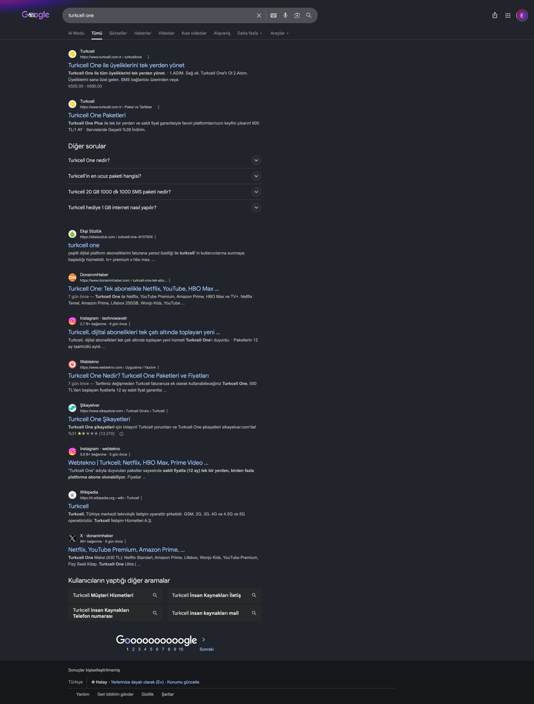
SERP (masaüstü)Google TR · canlı
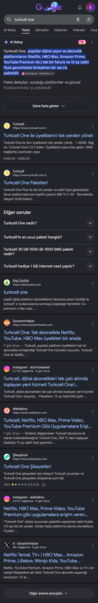
AI Bakışı + SERP (mobil)Google TR · canlı
Sayfa rol haritası ve kanibalizasyon. "turkcell one" sorgusunda One Plus detay (#1) ile hub (#2), "turkcell one nedir" sorgusunda ise liste (#1) aynı anda sıralanmaktadır. Sayfalar marka sahipli olduğundan rakibe kayıp riski düşüktür; ancak sinyallerin dağılmaması için rol ayrımı netleştirilebilir: hub = marka / tanım / "nedir", liste = paket karşılaştırma ve karar, detay = işlemsel / satın alma. "turkcell one" ana sorgusunda hangi sayfanın öne çıkacağı, iç bağlantı çapa metinleri ve canonical ile sinyal konsolidasyonu bir kural setiyle değerlendirilebilir.
AI & GEO
AI Overview & Generative Engine Optimization
"turkcell one nedir" sorgusunda Google'ın AI Overview yanıtı tanım ve paket dökümünde Webtekno, Instagram ve DonanımHaber'i birincil kaynak göstermekte; markaya atıf çoğunlukla "sayfayı ziyaret et / abone ol" adımında verilmektedir. Marka görünür olmakla birlikte tanımsal bilgi otoritesini büyük ölçüde üçüncü taraf yayıncılarla paylaşmaktadır.
AI Overview'in marka tanımı (alıntı). "Turkcell One, Netflix, HBO Max, Amazon Prime ve YouTube Premium gibi popüler dijital içerik ve yayın platformlarını tek faturada birleştiren ortak bir abonelik paketidir. Tek tek üye olma derdini ortadan kaldırır ve 12 ay boyunca sabit fiyat avantajı sunar." Kaynak atfı: Webtekno · Instagram · DonanımHaber. Paket dökümü (Star 500 / Plus 600 / Premium 690) atfı: Webtekno. "Sayfayı ziyaret et" atfı: Turkcell + Webtekno.
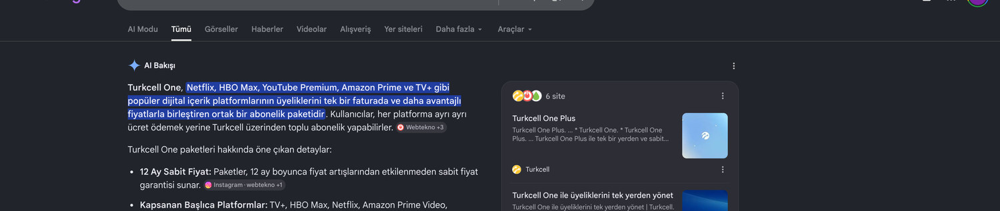
AI Bakışı + kaynaklar (masaüstü)Google TR · canlı
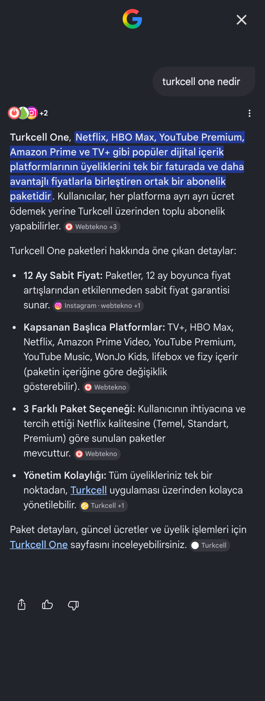
AI Bakışı tam metin (mobil)Kaynak: Webtekno +3
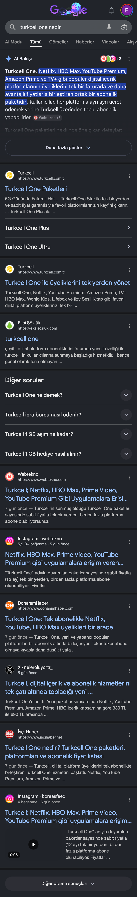
"nedir" SERP (mobil)Google TR · canlı
GEO yol haritası: atfı markaya yaklaştırmak
Alıntılanabilir tanım: "Turkcell One nedir?" yanıtının sayfanın üstünde net ve tek paragraf biçiminde konumlandırılması değerlendirilebilir.
Eksiksiz FAQPage: tüm soru ve cevapların işaretlenmesi, üretken motorların yapılandırılmış içeriği tercih etmesi açısından fayda sağlayabilir.
Karşılaştırma tablosu: "hangi pakette ne var" bilgisinin makine okunur tabloyla sunulması değerlendirilebilir (Webtekno bu yapıyla atıf almaktadır).
Değer bloğu: bireysel toplam ile paket fiyatının karşılaştırıldığı net bir özet eklenmesi fayda sağlayabilir.
Alıntılanabilir pasaj yapısı: her başlığın hemen altına 40-60 kelimelik, tek başına anlamlı yanıt pasajları yerleştirilmesi üretken motorların pasaj alıntısını kolaylaştırabilir.
AI tarayıcı erişimi: robots.txt içinde GPTBot, Google-Extended ve PerplexityBot erişiminin gözden geçirilmesi (gerekirse llms.txt) üretken motor görünürlüğü açısından değerlendirilebilir.
Yayıncı atfı: atıf alan Webtekno ve DonanımHaber gibi kaynaklara resmi basın / veri sayfası ile güncel bilgi sağlanması, markanın eş-kaynak konumunu güçlendirebilir.
Tazelik ve otorite: dateModified güncelliği, resmi açıklama ve güven bloklarının güçlendirilmesi markanın tercih edilen kaynak olmasına katkı sağlayabilir.
Talep Havuzu
Talep Havuzu & Content Gap
"turkcell one" terimi yeni oluştuğundan ölçüm araçlarında henüz düşük görünmektedir (aylık aramalar Nisan ~50, Mayıs ~260 ile yükselmektedir). Fırsat, platformların düşük rekabetli "fiyat / üyelik / paket" aramaları (content gap) üzerinden değerlendirilmektedir; bu aramalarda sıralama şansı daha yüksektir ve operatör rakipler halihazırda görünmektedir. Platformların çıplak ana adları (yüksek hacim, yüksek rekabet) doğrudan hedef alınmamaktadır.
Nasıl okunmalı? Aşağıdaki tablo, düşük Keyword Difficulty (KD) taşıyan "fiyat / üyelik / paket" aramalarını ve "Rakip görünürlüğü" sütununda bu aramada hangi operatörün halihazırda sıralandığını gösterir. Bu içerikler marka sayfasından köprülenebilir; aynı deseni Turkcell One hub sayfası da kullanabilir.
Düşük rekabetli content gap kelimeleri
Yüksek hacim + düşük KD (renk: KD)
Aylık hacim + KD · canlı SERP
Kelime↕
Aylık hacim↕
KD↕
Rakip görünürlüğü (canlı SERP)
Fırsat
amazon prime üyelik
60.500
6
Vodafone kampanya sayfası
Öncelikli
hbo max fiyat
5.400
3
Turkcell TV+ kampanya · AI Overview
Öncelikli
youtube premium fiyat
27.100
18
Resmi + editöryel
Yüksek
netflix paketleri
6.600
15
Vodafone blog · Türk Telekom tarife
Yüksek
netflix fiyat
49.500
11 (Ahrefs 44)
Resmi + editöryel
Yüksek
youtube premium türkiye
2.900
26
Editöryel
Orta
spotify premium fiyat
1.600
5
Kapsam dışı (talep notu)
Takip edilebilir
Rakip kanıtı. Operatör rakipler bu düşük rekabetli aramalarda kampanya ve blog sayfalarıyla halihazırda görünmektedir: Vodafone "amazon prime üyelik" (#6) ve "netflix paketleri" (#6), Türk Telekom "netflix paketleri" (#8, Prime Netflix tarifesi). Turkcell ise "hbo max fiyat" çevresinde TV+ HBO Max kampanya sayfasıyla (#9) zaten yer almaktadır. Aynı deseni Turkcell One hub sayfasının da kullanması, bu talebi yakalayıp One paketlerine köprülemesi için fırsat sunabilir. Disney+ ve Spotify paket kapsamında bulunmadığından, ilgili talep yalnızca FAQ ve konumlandırma notu olarak değerlendirilebilir.
Operatörler bu aramalarda nasıl görünüyor (canlı SERP ekran görüntüleri)
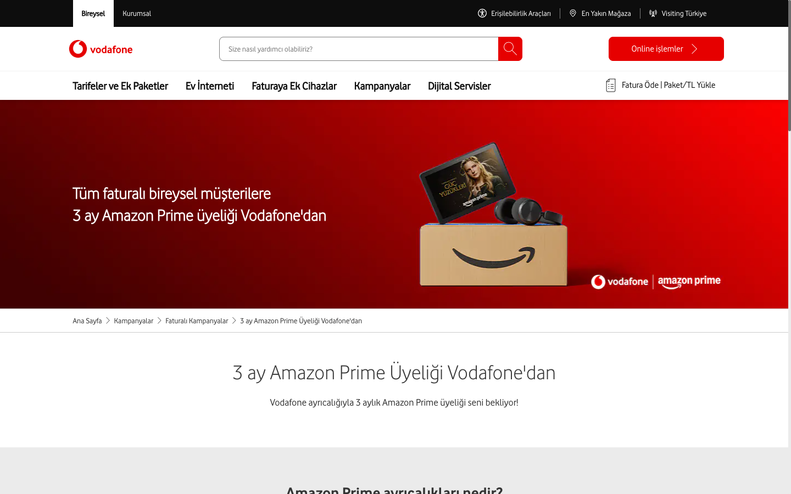
Vodafone · Amazon Prime"amazon prime üyelik" #6
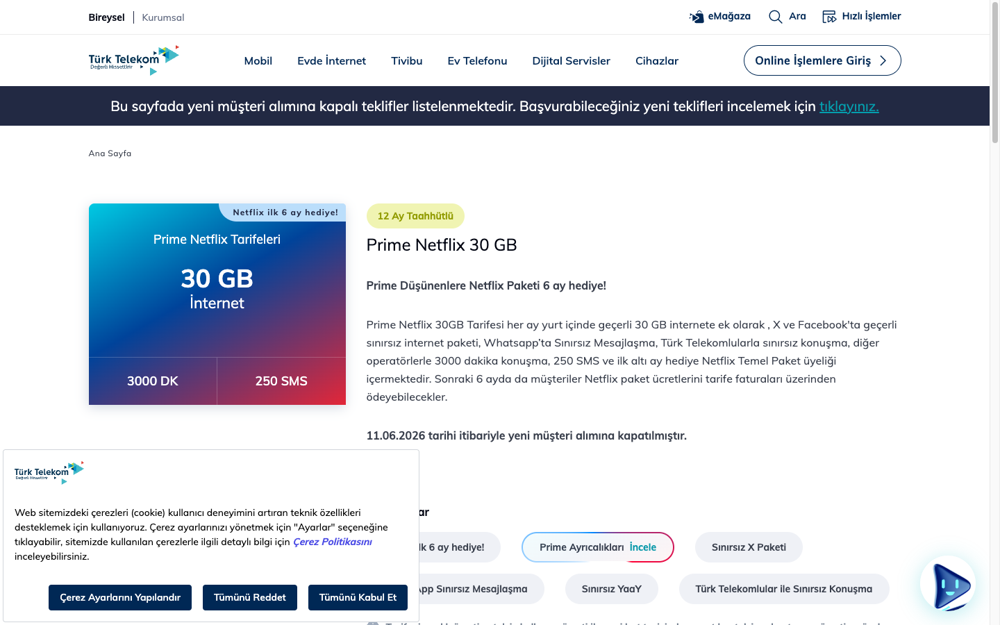
Türk Telekom · Prime Netflix"netflix paketleri" #8
Rakip İçerik
Rakip İçerikte Neler Var
İlk sayfadaki editöryel sayfaların içeriği incelenerek, marka sayfasında öne çıkarılabilecek alanlar çıkarılmıştır. Aşağıda her bir kaynağın gerçek içerik yapısı ve markanın değerlendirebileceği noktalar yer almaktadır.
Webtekno · AI atıflı
Net tanım + tablo + adımlar
Sayfada "Turkcell One nedir?", Paket / Platform / Fiyat tablosu ve dört adımlı "nasıl abone olunur" akışı bulunmaktadır. Bu yapı, AI yanıtlarının tercih ettiği biçimle örtüşmektedir.
Benzer makine okunur karşılaştırma tablosu hub sayfasında öne çıkarılabilir.
Dört adımlı abonelik akışı sayfada görselleştirilebilir.
"nedir" tanımı alıntılanabilir tek paragraf biçiminde konumlandırılabilir.
DonanımHaber · konu lideri
Altı paket + geçiş senaryoları
Altı paket tam dökümle, platform listesiyle ve mevcut üyelik geçiş senaryolarıyla sunulmaktadır. Bu senaryolar kullanıcı sorularıyla birebir örtüşmektedir.
Gerçek içerik (geçiş senaryoları)
Netflix: mevcut hesap Turkcell One'a taşınabiliyor
Amazon Prime / YouTube / Wonjo: önce iptal, sonra yeniden etkinleştirme
Altı paketin tamamı ve paket başına Netflix kademesi hub'da görünür kılınabilir.
Geçiş senaryoları yapılandırılmış bir blok veya FAQ olarak eklenebilir.
HBO Max'ın TV+ içinde kullanımı net biçimde açıklanabilir.
Marka sayfası, içerik öğeleri açısından editöryel liderlerle karşılaştırılmıştır. Marka organik güç ve satın alma akışında öne çıkar; geliştirme alanları makine okunur tablo, altı paket görünürlüğü ve geçiş senaryolarıdır.
İçerik öğesi
Marka sayfası
Webtekno
DonanımHaber
Not
Net "nedir" tanımı (alıntılanabilir)
Kısmi
Var
Var
Tek paragraf tanım
Makine okunur karşılaştırma tablosu
Henüz yok
Var
Liste
Paket / Platform / Fiyat
Paket başına Netflix kademesi
Kısmi
Var
Var
Temel / Standart / Premium
Altı paketin görünürlüğü
3 öne çıkıyor
3
6 paket
İki aile
"Nasıl abone olunur" adımları
Kısmi
4 adım
Var
SMS / uygulama
Mevcut üyelik geçişi
FAQ'da kısmi
Henüz yok
Var
Net senaryo
Marka organik #1-#2
Var
Yok
Yok
Marka gücü
Ticari yönlendirme / CTA
Var
Yok
Yok
Satın alma akışı
Vodafone ve Türk Telekom dijital platform avantajlarını mobil tarifeye ekleyerek konumlanır; "fiyat / üyelik / paket" aramalarında kampanya ve tarife sayfalarıyla görünmektedir.
Vodafone
Red tarifeler + Sınırsız Uygulamalar
Red 40 / 60 / 100 GB tarifeleri (₺750 / 900 / 1.100) ve 3 ay dijital platform üyeliği (Amazon Prime vb.) avantajı
Sınırsız Uygulamalar: Sınırsız İletişim (WhatsApp · Messenger), Sınırsız Sosyal (Instagram · Facebook · X) ve Sınırsız Eğlence (YouTube · Netflix · Amazon Prime · Spotify) paketleriyle uygulama bazlı, kotadan düşmeyen kullanım
"amazon prime üyelik" (#6) ve "netflix paketleri" (#6) aramalarında kampanya / blog ile görünür
Fark: Vodafone dijital avantajı mobil tarifeye ve uygulama bazlı internet faydasına bağlar (platform üyeliği 3 ay, uygulama kullanımı kotadan düşmez). Turkcell One ise bağımsız ve kalıcı dijital bundle olarak farklılaşır.
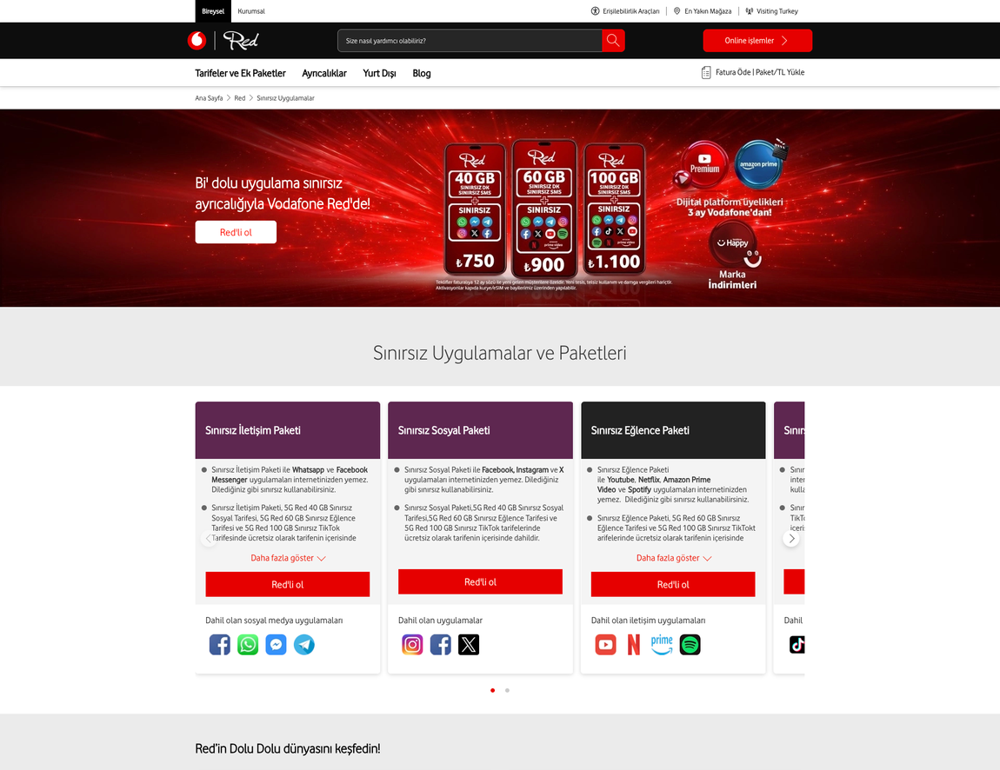
Vodafone Red (canlı)Sınırsız Uygulamalar · 3 ay dijital üyelik
Türk Telekom
Prime / Yeni Nesil tarifeler
Ek Faydalar: Tivibu, YouTube Premium, hediye çeki; Prime Netflix tarifesi
Operatörlerin bu kelimelerde sıralandığı canlı SERP ekran görüntüleri "Talep Havuzu" bölümündedir.
Google Trends
Arama İlgisi (Google Trends, Türkiye)
Son 90 günde "turkcell one" arama ilgisinin Haziran başına kadar ölçüm eşiğinin altında seyrettiği, 9 Haziran'da lansman kaynaklı zirveye (göreli 100) ulaşıp ardından normalize olduğu gözlemlenmektedir.
Zaman içinde ilgi (göreli 0-100)
Türkiye · son 90 gün
Bölgeye göre ilgi (ilk 5)
Türkiye alt bölgeleri · gözlemlenen ilk sıralar
Yükselen ilgili sorgular
turkcell netflix
hbo max
turkcell one plus · turkcell one premium
youtube premium fiyat · netflix fiyat
google one (kıyas / kafa karışıklığı sinyali)
Yükselen ilgili konular
HBO Max
YouTube Premium
Amazon Prime Video
5G
Para İadesi (cashback beklentisi)
Kaynak: DataForSEO Google Trends (ilgili konular, yükselen).
Sosyal Duygu
Sosyal Duygu: X (Twitter), Ekşi Sözlük & Şikayetvar
X, Ekşi Sözlük ve Şikayetvar canlı incelenmiştir. Genel tonun karışık ve olumluya yakın olduğu; fiyat avantajı ve zamanlama vurgusunun öne çıktığı, isim kafa karışıklığı ve deneyim temelli geri bildirimlerin gözlemlendiği görülmektedir. Şikayetvar tarafında ise ağırlıklı olarak genel marka deneyimi (fatura, müşteri hizmetleri) başlıklarının yer aldığı, "one" filtresinde 61 kaydın bulunduğu gözlemlenmektedir. Aşağıdaki kartlarda gerçek kullanıcı adları, paylaşım özeti ve öne çıkan nokta yer almaktadır.
Gözlemlenen ton dağılımı
"En Son" akışı örneklemi (gözlem)
Öne çıkan temalar
Olumlu: "daha uygun", "geçtiğimden beri rahatım", yükselen platform fiyatları sonrası zamanlama.
Paylaşımlar gözlemlenen duygu durumuna göre gruplanmıştır; her kart kaynağıyla (X / Ekşi) etiketlidir.
Olumlu · değer ve zamanlama6 paylaşım
EGEda Güneş@gunesliedaa · 11 HazX
"Çok yükselmiş ya, buna para vereceğime turkcell one'a geçerim."
Öne çıkan: Platform fiyat artışları bundle'ı cazip kılıyor; değer / tasarruf anlatısı bu motivasyonu karşılayabilir.
NANazan Aksoy@Nazannaksoy · 11 HazX
"Ben turkcell one'a geçtiğimden beri rahatım."
Öne çıkan: "Abonelik karmaşasını bitirme" mesajı kullanıcı dilinde karşılık buluyor.
ubo senin kendi ubuntun03.06.2026Ekşi
"Çeşitli dijital platform aboneliklerini faturana yansıt özelliğiyle sunan hizmet. Ayrı ayrı üye olmaya kıyasla daha avantajlı fiyatlar içeriyor."
Öne çıkan: İlk tanım olumlu ve değer odaklı; aynı çerçeve sayfa anlatısında kullanılabilir.
lzluzumsuzbilgi...06.06.2026Ekşi
"En kapsamlı pakette her şeye ayrı ayrı abone olunca ~1.100 TL'lik maliyet 690 TL'ye sabitleniyor. 12 ay sabit fiyat enflasyon ortamında güvenli liman gibi."
Öne çıkan: Kullanıcının kendi hesabıyla doğruladığı ~%40 tasarruf, değer bloğu için güçlü bir çerçeve.
usuyaniksporun sol acigi15.06.2026Ekşi
"Ayrı ayrı üyeliklerime (Netflix, YouTube Premium aile, Amazon Prime, S Sport Plus) aylık ~900 TL ödüyorum; HBO Max'i de eklersem ~1.150 TL. Premium paket 690 TL ve 12 ay sabit fiyat; HBO Max standart kademe."
Öne çıkan: Bağımsız bir kullanıcının kendi sepetiyle yaptığı kıyas değer anlatısını destekliyor.
DHDonanımHaber@donanimhaber · 11 HazX
"YouTube Premium'a Türkiye'de zam: bireysel ve aile fiyatları yükseldi." (~40 B görüntülenme · bağlam)
Öne çıkan: Yüksek görüntülenen bu içerik, bundle değer önermesinin zamanlamasını destekliyor.
Soru · kafa karışıklığı3 paylaşım
SGSaim Gökalp@GokalpSaim · 11 HazX
"Turkcell one ne oluyor yaaa?"
Geliştirme alanı: Net ve alıntılanabilir "nedir" tanımı, bu kafa karışıklığını sayfa ve AI yanıtı düzeyinde azaltabilir.
TYTolunay Yılmaz@3BTolunay · 10 HazX
"Google One'dan ilhamla çıkmış gibi; Netflix, Prime, YouTube, HBO Max, TV+ tek pakette. Normalde hepsine ~₺380 ödenebiliyor."
Geliştirme alanı: Fiyat şüphesine karşı şeffaf "bireysel toplam vs paket" karşılaştırması değer algısını güçlendirebilir.
bnbendogi09.06.2026Ekşi
"Mevcuttaki TV+ HBO Max üyeliğim için cayma bedeli yansıyacak mı, geçiş ne kadar mantıklı?"
Geliştirme alanı: Mevcut üyelik geçişi ve cayma koşulu, net bir FAQ bloğuyla yanıtlanabilir.
Geri bildirim · kapsam ve deneyim4 paylaşım
ÖzÖzkan@argent134 · 13 HazX
"Turkcell One ile ilgili YouTube Premium aile üyeliğim konusunda destek sürecim uzadı."
Geliştirme alanı: YouTube üyelik tipinin (bireysel / aile) sayfada net belirtilmesi ve geçiş adımlarının açıklanması beklenti yönetimine katkı sağlayabilir.
ikikinciadam03.06.2026Ekşi
"En yüksek pakette bile HBO Max standart olduğu için 4K Dolby Vision yok; bu benim için önemli (Netflix'te var)."
Geliştirme alanı: HBO Max kademe bilgisi (standart) ve hangi içeriğin hangi pakette 4K olduğu tabloda netleştirilebilir.
brbraincell13.06.2026Ekşi
"Paketteki platformları TV+ uygulaması içinde izleyemeyeceksek gerek yok."
Geliştirme alanı: Platformların nerede / nasıl izleneceği (TV+ içi kullanım) sayfada açıkça anlatılabilir.
tatayo13.06.2026Ekşi
"En üst paketi 1 yıllık aldım, geçtim. Keşke TOD ve Disney de dahil olsaydı. YouTube tek hesap premium, aile değil."
Geliştirme alanı: Kapsam beklentileri (Disney, YouTube aile) ve mevcut kapsam net belirtilebilir; YouTube üyelik tipi vurgulanabilir.
Şikayetvar: şikayet sinyali
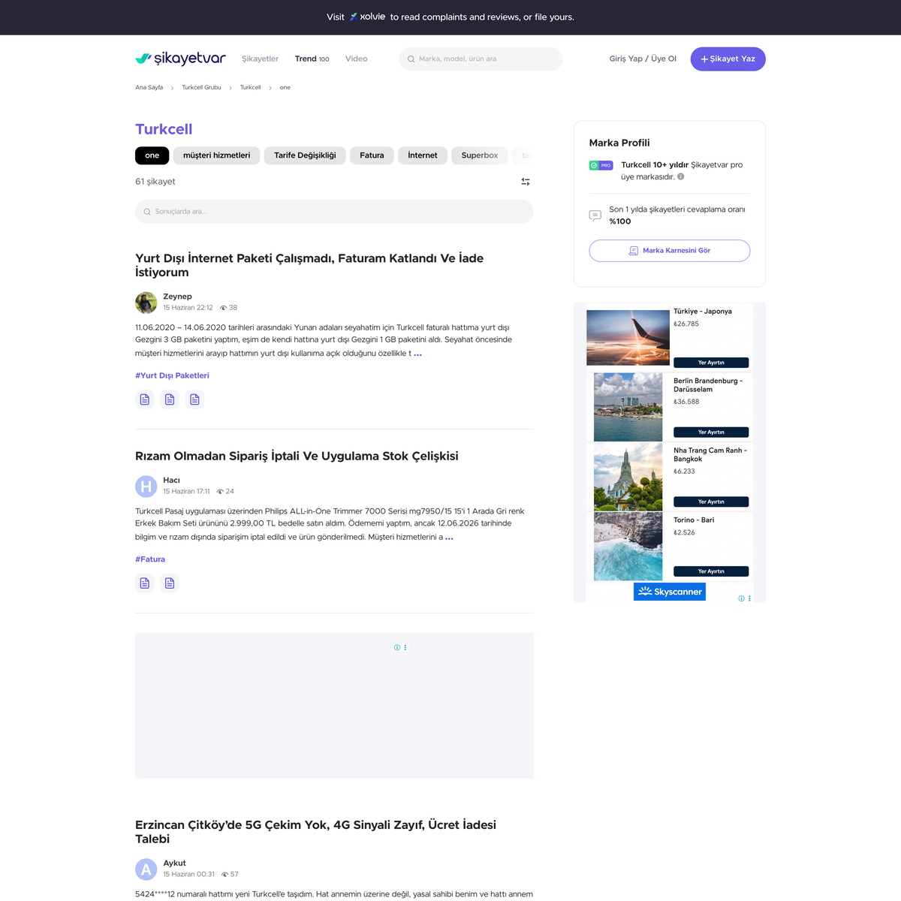
"one" filtresi (genel)61 kayıt · çoğu genel marka deneyimi
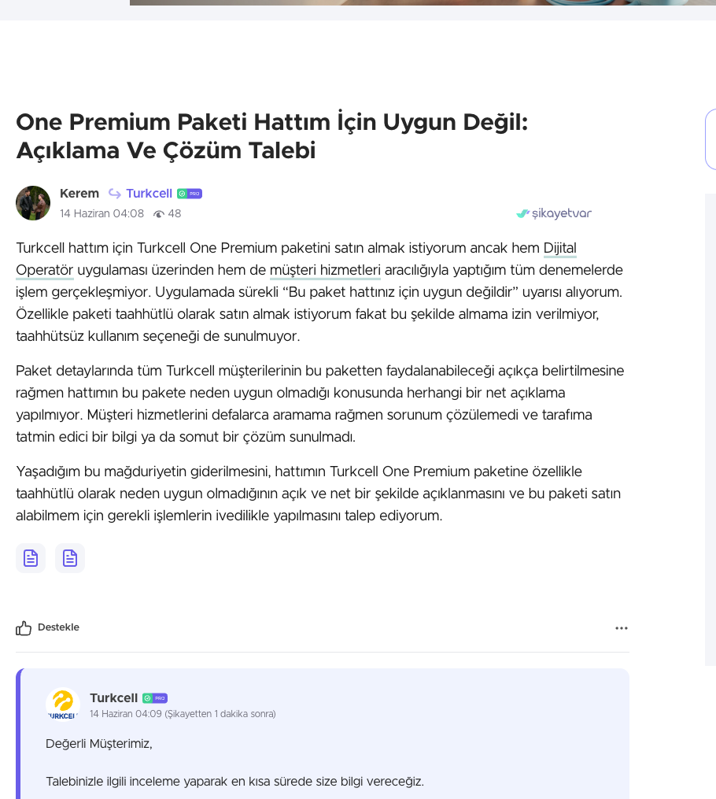
One'a özgü tek şikayetpaket uygunluk · marka 1 dk'da yanıtladı
Gözlemlenen tablo
Hacim: "one" filtresinde 61 kayıt görünse de bunların büyük çoğunluğu genel marka deneyimine (fatura, yurt dışı paket, müşteri hizmetleri) ilişkindir; Turkcell One paketine özgü şikayet pratikte tektir ("One Premium paketi hattım için uygun değil" - paket uygunluk / aktivasyon konusu).
Marka yanıtı: Bu tek şikayete marka 1 dakika içinde yanıt vermiştir; profil genelinde son 1 yılda yanıt oranı %100 olarak görünmektedir.
Anlam: Turkcell One'a özgü şikayet hacmi henüz çok düşüktür (ürün yeni). Öne çıkan tek tema paket uygunluk / aktivasyon netliğidir; sayfa içi FAQ'da katılım kriterleri ve uygunluk koşullarının açık anlatımı, erken aşamada bu tür şikayetlerin oluşumunu azaltabilir.
Not: Paylaşımlar gözlem amaçlı, gerçek kullanıcı adlarıyla ve özetlenerek aktarılmıştır; birebir uzun alıntı ve kişisel tanımlayıcı bilgi paylaşılmamıştır. Kaynaklar: X araması · Ekşi Sözlük · Şikayetvar.
Kullanıcı Sesi
Kullanıcı Soruları & İçerik Eşleşmesi
Ekşi, X ve PAA üzerinden derlenen sorular kümelenmiş ve yanıtlanabilecekleri sayfa bloğuyla eşleştirilmiştir.
Küme
Örnek soru
Yanıt yeri
FAQ adayı
Tanım
Turkcell One nedir / ne işe yarar?
Hub hero + FAQ
Evet
Karar
Hangi pakette ne var? En uygun hangisi?
Karşılaştırma tablosu
Evet
Karar
Bireysel toplama göre değer sunuyor mu?
Değer bloğu
Evet
Geçiş
Mevcut Netflix / HBO üyeliğim ne olur? Cayma?
FAQ + geçiş bloğu
Evet
Kullanım
Platformları TV+ içinde mi izlerim?
FAQ
Evet
Kapsam
YouTube aile mi bireysel mi? Disney / Spotify?
FAQ + tablo dipnotu
Evet
Kalite
HBO Max 4K / Dolby Vision var mı?
Karşılaştırma tablosu dipnotu
Evet
CRO / CX / UI-UX
Sayfa Deneyimi (CRO / CX)
Hedef sayfa rolleri. Öne çıkarılmak istenen sayfa hub / onboarding (/turkcellone/) · birincil hedef (#1). Paket listesi /paket-ve-tarifeler/turkcell-one ise ikincil hedeftir (#2). Aşağıda önce hub deneyimi, ardından liste / detay sayfaları ayrı değerlendirilmiştir.
Hub (onboarding) sayfası · birincil hedef
Sayfa akışı: hero · "Neler Var?" · "Size En Uygun Paketi Seçin" (3 paket) · "3 Adımda One'lı Ol!" · SSS · aydınlatma metni. Numaralı noktalar dönüşüm ve deneyim alanlarını gösterir.
En popüler uygulamalar tek pakette!
Turkcell One ile tüm üyeliklerini tek yerden yönet.
Milyonlarca üyesi olan popüler uygulama üyeliklerinin tek yerden yönetildiği yepyeni bir dünya...
Hero CTA: "Hemen Keşfet" yumuşak bir yönlendirme sunmaktadır; fiyat veya paket çapasının hero alanında görünür olması karar yolculuğunu kısaltabilir.
Paket gösterimi: Hub'da üç paket (Star / Plus / Premium) öne çıkmaktadır; HBO Max içermeyen üç paketin (Mega / Maksi / Ultra) ve kademe farklarının da görünür olması seçenek algısını genişletebilir.
Karşılaştırma: Paketler arası "hangi pakette ne var" karşılaştırma tablosunun bulunmaması, kararı zorlaştıran bir alan olarak öne çıkmaktadır.
Ek deneyim gözlemleri
Fiyat karşılaştırma bloğu (tek tek toplam vs paket) en güçlü satın alma motivasyonu olmasına rağmen sayfada öne çıkmamaktadır.
HBO Max kademe dipnotu (standart) önemli bir kullanıcı sorusuna denk gelmekte; daha görünür kılınabilir.
Aydınlatma metni sayfa içinde uzun yer kaplamakta; özetlenip ayrı sayfaya bağlanması okunabilirliği artırabilir.
Sosyal kanıt (kullanıcı sayısı, puan, yorum) ve güven sinyalleri öne çıkarılabilir.
Mobil görünümde hero görseli metnin altına inmekte; öncelik sırası gözden geçirilebilir.
Liste & paket detay sayfaları · ikincil hedef
Paket listesi (#2) ve detay sayfaları ticari karar ve satın alma odaklıdır; hub deneyiminden ayrı değerlendirilmiştir.
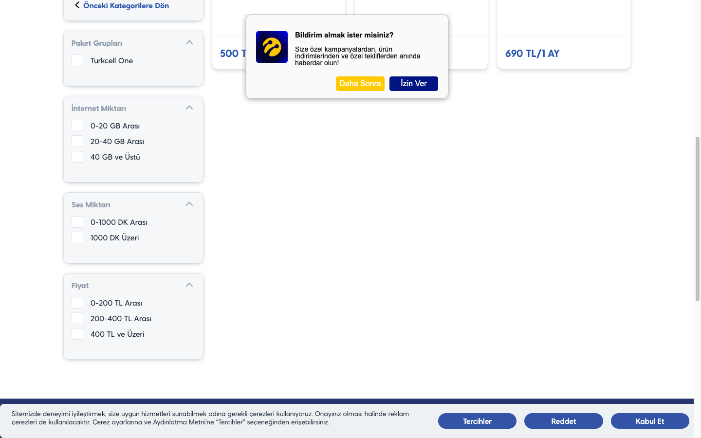
Liste (canlı · masaüstü)Paket kartları
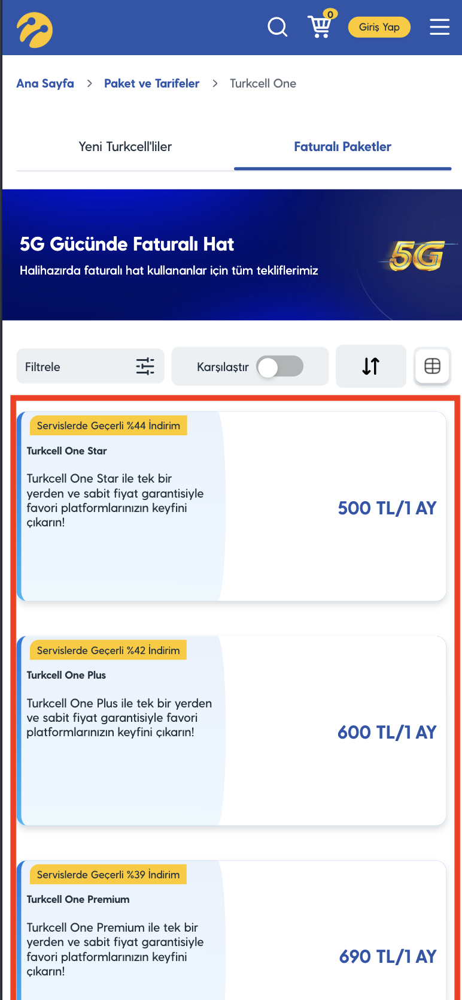
Liste (mobil)3 paket görünümü
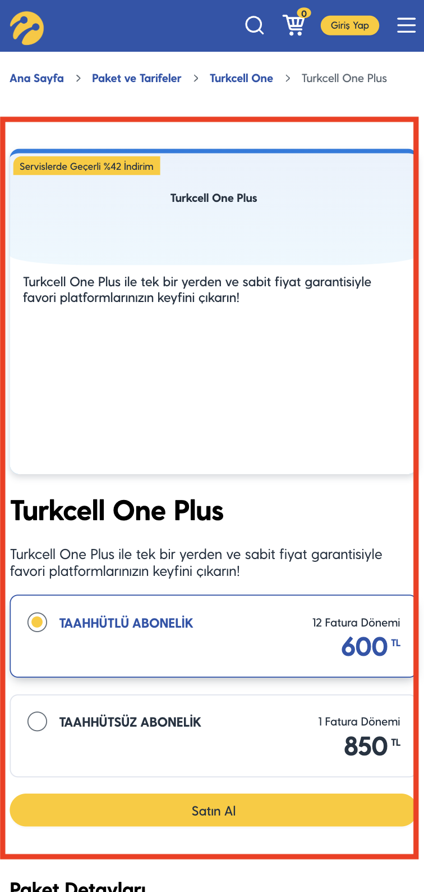
Paket detay (mobil)Taahhütlü / taahhütsüz
Liste sayfasında altı paketin tamamı ve paket başına Netflix kademesi netleştirilebilir.
Hub içi iç bağlantının (ölçülen 7) güçlendirilmesi
Not: TTI / DOM proxy göstergelerdir; gerçek LCP / CLS / INP için CrUX / PSI önerilir. Kaynak: DataForSEO on_page + canlı gözlem + müşteri SEO dokümanı. Sayfa →
Aksiyon
Aksiyon & İçerik Brief
Aşağıdaki maddeler etki ve öncelik etiketiyle sunulmaktadır. Tümü değerlendirme niteliğindedir. Ayrıntılı aksiyon listesi rapora ek Word dokümanında yer almaktadır.
Her madde, mevcut Turkcell One SEO Optimizasyonları (Haziran 2026) dokümanı ile karşılaştırılarak kaynağı etiketlenmiştir. Böylece dokümanda zaten yer alan başlıklar tekrar önerilmiş gibi görünmez; bu raporun rekabet, talep havuzu ve GEO analizinden gelen ek katkıları ayrı işaretlenir.
Doc'ta var Mevcut SEO dokümanında zaten yer alıyorDoc + ek Dokümandaki maddeyi genişletiyorAnaliz eki Bu raporun analizinden gelen yeni öneri
Teknik başlıkların tamamı mevcut SEO dokümanında zaten tanımlıdır; burada yalnızca tutarlılık için özetlenmiştir. Bu raporun katkısı içerik, GEO ve talep tarafındadır (sonraki sekme).
Öneri
Detay
Kaynak
Öncelik
Meta Title
"Turkcell One ile Tüm Platformlar Tek Paket | Turkcell" yönünde güncelleme
Doc'ta var
Yüksek
Meta Description
Dijital abonelik paketi ve tek fatura vurgusuyla güncel açıklama
Doc'ta var
Yüksek
FAQPage tam kapsam
Tüm soru ve cevapların işaretlenmesi ve güncel tutulması
Doc'ta var
Yüksek
Başlık hiyerarşisi
Banner metinlerinin H2'den standart metne, paket adlarının H3'e taşınması
Doc'ta var
Orta
URL ve canonical
/turkcell-one yönüne 301 ve sonda "/" tutarlılığının gözden geçirilmesi
Doc'ta var
Orta
WebPage / Product schema beslemesi
Tek script altında toplama; Product name/description alanlarının meta'dan beslenmesi
Doc'ta var
Orta
Bu sekme, raporun rekabet · talep havuzu · GEO analizinden gelen ek katkıları içerir; başlıkların çoğu mevcut dokümanda yer almamaktadır.
Aksiyon
Hedef kelime / soru
Kaynak
Öncelik
Paket karşılaştırma tablosu (makine okunur)
hangi pakette ne var, netflix kademesi, hbo max 4K
Analiz eki
Öncelikli
Değer / tasarruf bloğu
bireysel toplam vs paket, ~%40 tasarruf
Analiz eki
Öncelikli
Platform fiyat / üyelik köprü içerikleri
amazon prime üyelik (60,5B/KD6), youtube premium fiyat (27,1B/KD18), hbo max fiyat (5,4B/KD3)
Analiz eki
Öncelikli
Geçiş & cayma FAQ bloğu
mevcut netflix/hbo üyeliği, cayma bedeli, TV+ içinde izleme
Doc + ek not: Geçiş / cayma soruları mevcut dokümanın FAQ şemasında yer almaktadır; bu raporun katkısı bu içerikleri sayfada görünür bir blok hâline getirmek ve "platformları TV+ içinde izleme" gibi gözlemlenen ek soruları kapsamaktır.
Hız ve CWV başlıklarının çoğu mevcut dokümanda tanımlıdır; raporun ölçümü (DataForSEO on_page + canlı gözlem) bunları teyit eder ve birkaç ek başlık ekler.
LCP: ana banner görselinin lazy dışında tutulması, fetchpriority ile önceliklendirilmesi ve head içinde preload edilmesi değerlendirilebilir. Doc'ta var
CLS: üst görsel alanına aspect-ratio, marka logolarına ve paket kartlarına sabit boyut tanımlanması ile kayma azaltılabilir. Doc'ta var
Görsel: ~59 görselin webp / srcset'e taşınması (dokümanda var) ve alt metinlerin eklenmesi (DataForSEO ölçümünde alt metin eksik) hem hız hem erişilebilirlik açısından fayda sağlayabilir. Doc + ek (alt metin)
Yükleme: render engelleyen kaynakların ve script yükünün (28 script) azaltılması, etkileşime hazır olma süresini (~3,2 sn) iyileştirebilir. Analiz eki
INP: ana iş parçacığını meşgul eden script yükünün bölünmesi ve uzun görevlerin parçalanması etkileşim gecikmesini iyileştirebilir; gerçek değer CrUX / PSI ile teyit edilebilir. Analiz eki
İç bağlantı: hub'dan platform ve karşılaştırma içeriklerine iç bağlantı sayısının (ölçülen 7) artırılması değerlendirilebilir. Analiz eki
Font: font-display: swap ve font preload ile metin kaymasının önüne geçilmesi fayda sağlayabilir. Doc'ta var
Örnek içerik brief: "Turkcell One paket karşılaştırma"
Amaç: Karar aşamasındaki kullanıcıya altı paketin farkını net göstermek; AI atfı için makine okunur tablo sunmak.
Hedef sorular: hangi pakette ne var, en uygun hangisi, HBO Max'li / HBO Max'siz fark, Netflix kademesi.
Yapı: Kısa "nedir" girişi (alıntılanabilir) → karşılaştırma tablosu (paket / platform / Netflix kademesi / fiyat) → değer bloğu (bireysel toplam vs paket) → SSS → CTA.
Ton: şeffaf, kanıtsız üstünlük iddiasından uzak, fiyat / koşul tarih damgalı.
Geliştirme Alanları
Mevcut Sayfalara Eklenebilir Geliştirme Alanları
Aşağıdaki başlıklar ayrı sayfalar olarak değil, mevcut hub ve liste sayfalarına eklenebilecek bölümler veya geliştirme alanları olarak değerlendirilebilir. Skor; niyet, marka uyumu ve içerik boşluğu birlikte değerlendirilerek verilmiştir.
Eklenebilir alan↕
Tür↕
Karşıladığı soru
Fırsat↕
Paket karşılaştırma tablosu bloğu
Hub içi bölüm
hangi pakette ne var, fark, en uygun
9
Değer / tasarruf bloğu
Hub içi bölüm
bireysel toplama göre değer mi
9
Geçiş & cayma FAQ genişletmesi
FAQ bloğu
mevcut üyelik, cayma, TV+ içinde izleme
8
Platform fiyat / üyelik köprü içerikleri
Bilgi bloğu / iç bağlantı
youtube premium fiyat, amazon prime üyelik
8
"Nasıl abone olunur" görsel adımları
Hub içi bölüm
nasıl abone olunur, aktivasyon
7
Kapsam dipnotu (Disney / Spotify / YouTube tipi)
Tablo dipnotu / FAQ
disney var mı, youtube aile mi
6
Not. Bu blokların "nedir + tablo + FAQ" deseniyle kurulması, AI atfı ve long-tail görünürlük açısından fayda sağlayabilir; hub içi konumlandırma ile otoritenin hub'da toplanması değerlendirilebilir.
Ek
Terim Sözlüğü & Kaynaklar
Terim sözlüğü
SERP: arama motoru sonuç sayfası
AI Overview: Google'ın üretken yapay zekayla oluşturduğu özet cevap
GEO: üretken motorlar için içerik görünürlüğü çalışması
KD: kelime zorluğu (0-100)
Content Gap: rakipte / talepte olup markada olmayan içerik alanı
Schema / FAQPage: yapılandırılmış veri işaretlemesi
CWV / LCP / CLS: sayfa deneyimi metrikleri
Long-tail: spesifik, düşük hacimli, yüksek niyetli kelimeler